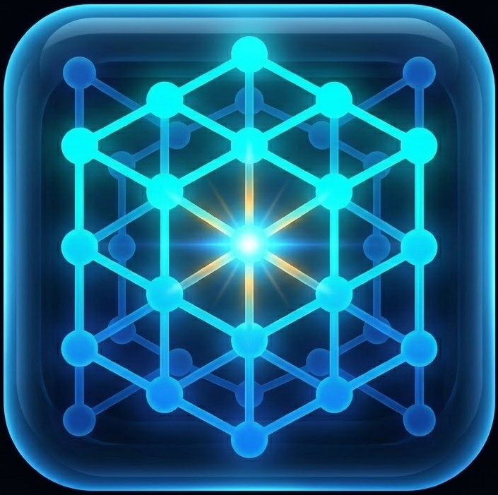

Matriz de Respuesta
Arrastra los números al panel inferior

Inicia la secuencia de aprendizaje progresivo
Secuencia: Suma y Resta
Dimensión 2x2 | Rango [1-5]
Secuencia: Multiplicación
Dimensión 2x2 & 3x3 | Rango [1-8]
Secuencia: Transpuesta y Det.
Dimensión 2x2 & 3x3 | Rango [1-10]
Secuencia: Operaciones Combinadas
2 Fases por desafío | Dimensión 2x2 & 3x3
Desarrollado en la Universidad Politécnica de Querétaro por Regina Lopez Soto y Diego Francisco Cruz Cruz